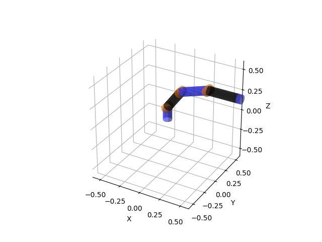

Note
Go to the end to download the full example code.
Robot¶
We see a 6-DOF robot arm with visuals.
import os
import numpy as np
import matplotlib.pyplot as plt
from pytransform3d.urdf import UrdfTransformManager
BASE_DIR = "test/test_data/"
data_dir = BASE_DIR
search_path = "."
while (not os.path.exists(data_dir) and
os.path.dirname(search_path) != "pytransform3d"):
search_path = os.path.join(search_path, "..")
data_dir = os.path.join(search_path, BASE_DIR)
tm = UrdfTransformManager()
filename = os.path.join(data_dir, "robot_with_visuals.urdf")
with open(filename, "r") as f:
robot_urdf = f.read()
tm.load_urdf(robot_urdf, mesh_path=data_dir)
tm.set_joint("joint2", 0.2 * np.pi)
tm.set_joint("joint3", 0.2 * np.pi)
tm.set_joint("joint5", 0.1 * np.pi)
tm.set_joint("joint6", 0.5 * np.pi)
tm.plot_visuals("robot_arm", ax_s=0.6, alpha=0.7)
plt.show()
Total running time of the script: (0 minutes 0.100 seconds)